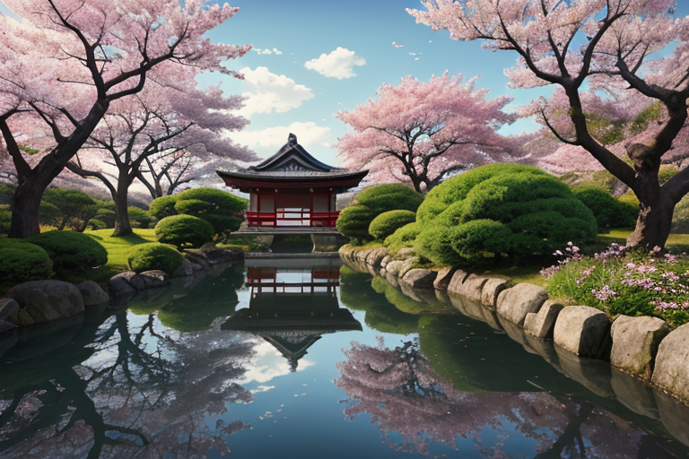
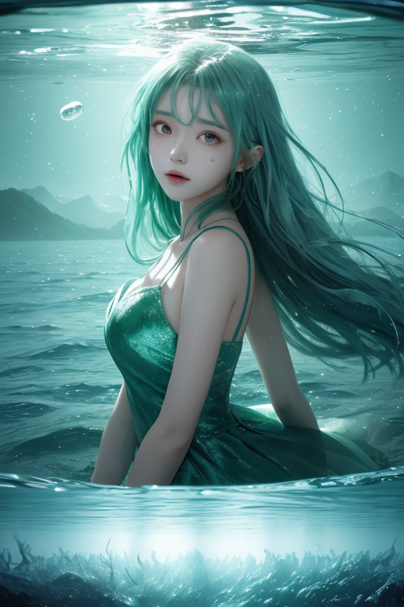
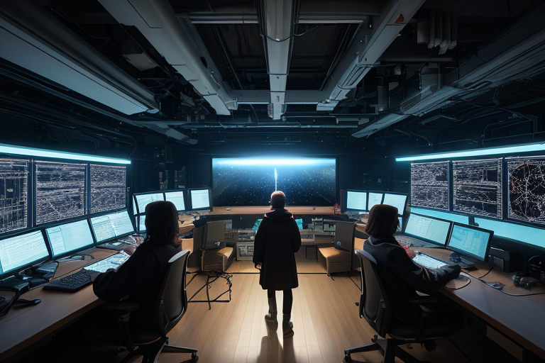
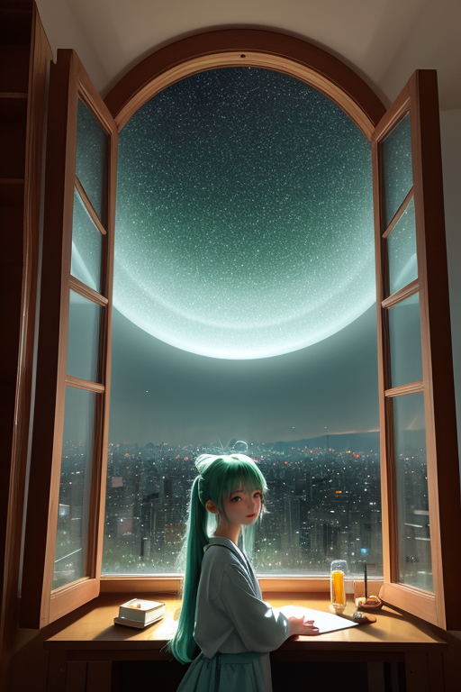
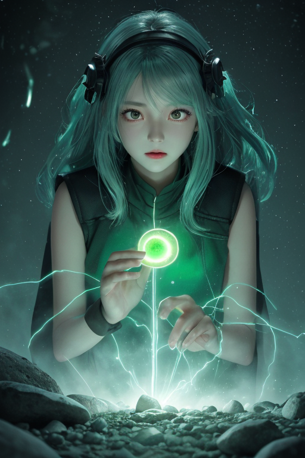

第一章 現実の茨城
あなたはまだ気づいていない。この土地にも、王がいることを。
偕楽園の梅は、今年も静かに咲いた。訪れる人々はその美しさに息を呑み、写真に収める。彼らは知らない。この庭園が、水戸黄門こと徳川光圀が「民と偕（とも）に楽しむ」ために造った、一種の社会実験の場であったことを。境界――身分の、思想の――を越えようとした痕跡が、今は花の下に眠っている。
そのすぐ近く、千波湖の水面は穏やかだった。しかし、湖底では、目に見えない歪みが、ゆっくりと蓄積されつつあった。日本列島を押し上げる巨大な力の、ほんの一端が、ここ茨城の地盤にもかかっていた。
王は、その歪みを感じていた。深緑と銀の紋章が、偕楽園の空気のわずかな震えに反応する。彼は感情を持たないはずだった。だが、この土地が繰り返してきた「越境」の歴史――学問の、技術の、身分制度の――が蓄積した熱のようなものに、彼の心は、かすかに揺さぶられ始めていた。好奇心という名の、初めての波が。

第二章 歪みの兆候
筑波研究学園都市の一角で、微小な地震計が、理論値を超える揺れを記録した。地質学的に説明のつかない、ごく局所的な歪みだ。境界王イバラキア・フロンティアは、銀の矢印が刻まれた紋章を手に、そのデータを見つめた。歪みの源は、地下深くではなく「歴史」そのものにあると直感した。
「フロンティ、黄門さまの時代の『越境』が、まだ波紋を残している」
「はい、王。学問の自由を求めたあの意志が、現代の技術革新の熱と共鳴し、地盤に微妙な『こだま』を生んでいます」
彼は霞ヶ浦の岸辺に立った。湖面は凪いでいるが、水底では見えない流れが渦を巻く。トネリアが囁く。「流れが、過去と未来の境界で乱れています。調整が必要です」
王は感情を持たない。だが、この土地が挑戦し続けてきたこと――身分を越え、学問の壁を越え、自然の理を越えようとしてきた無数の意志の蓄積が、物理的な歪みとして現れている事実に、一種の「理解」に近いものが芽生えた。越えようとする意志そのものが、新たな境界＝歪みを生む。彼は、その矛盾を前に、初めて「考える」という行為に近づいた。

第三章 王の葛藤
筑波研究学園都市の、深夜の実験室。無数のモニターが淡い光を放ち、データの川が流れる。ここは、人間が知の境界を押し広げようとする最前線だ。王は、その意志の集積が生む微細な歪みを感じ取っていた。加速器の轟、シミュレーションの演算熱、全てが「越えよう」という意思の物理的表現だった。
「主よ、この流れを調整すべきか」トネリアが問う。大河の妖精は、急流が岸を削るように、変革の意志が既存の秩序という土壌を侵食する様を憂えていた。
王は黙った。彼の役割は歪みを調整し、破局を防ぐことだ。ならば、この激しい変革のエネルギーそのものを、幾分か緩和すべきかもしれない。しかし、フロンティが言った。「待ってください！ この熱は、未来への『風』です。止めれば、全てが停滞してしまう」
王は初めて、選択に逡巡した。調整者である彼が、この土地の「挑戦」という本質を、果たして抑制してよいものか。水戸の地で学問の壁を越えようとした光圀の意志、そして今ここで理の境界に挑む者たち。越えようとするその意志そのものが、茨城という土地の「歪み」の正体なのかもしれない。彼は、銀色の深緑の紋章を静かに見つめた。

第四章 妖精との対話
「王よ、迷うのですか。」
フロンティが、研究棟の窓辺に舞い降りた。その声には、いつもの活発さの奥に、稀に見る静けさがあった。
「この熱は、確かに危うい。制御を失えば、歪みを生む火種にもなる。でも――」
彼女は、窓の外に広がるつくばの街並みを見た。夜の闇に、幾つもの研究室の明かりが微かに揺れている。
「この土地は、ずっと『境界』そのものでした。霞ヶ浦は海と淡水の境。筑波山は天と地の境。そして今ここは、知の未知との境。越えようとするから、揺れる。挑戦には、必ず代償が伴う。」
トネリアの声が、地下水脈のように静かに響いた。
「流れを変えるとは、そういうことです。袋田の滝だって、岩肌を削りながら落ちる。削られる痛みと、新しい流路が生まれることは、表裏一体。」
王は黙って聞いていた。妖精たちは、彼が感じ始めた「逡巡」という感情を、この土地の言葉で翻訳していた。
「越えれば、何かが壊れる。」フロンティが言った。「でも、越えなければ、何も生まれない。あなたが調整できるのは、壊れ方だけ。壊すか、壊さないかは、彼らが決めることです。」
王は、掌に浮かぶ深緑の紋章を見つめた。境界線を越えようとする矢印が、微かに脈打っていた。

第五章「微調整と余韻」
筑波研究学園都市の一角で、実験は最終段階を迎えていた。王は、巨大加速器の制御室の「外」に立っていた。彼の目には、確率の雲が渦巻き、一つの粒子が、予定された軌道からほんのわずかに逸れる未来が見えていた。その逸れが、連鎖的に「流れ」を変え、十年後のある画期的な発見を、別の研究者、別の土地へと押し流してしまう。
「越えますか」フロンティが囁いた。王は頷いた。代償は大きい。この調整のため、彼は蓄えてきた力の大半を使い、しばらくは霞ヶ浦の波さえも遅らせられなくなる。彼は銀色の矢印を、確率の境界線へと放った。目には見えない、ほんの一瞬の「ずれ」が生じた。粒子は、ほんの少しだけ、元の軌道へと引き戻された。研究室で、研究者がスクリーンを見つめ、小さく息を呑んだ。
歴史は、ごくわずかに曲がった。代償に、王の姿は深緑の光の粒となり、筑波山の麓の古い研究所の礎石に、そっと降り積もった。彼は知っている。越えたことで変わったのは、発見の「場所」と「人」だけではない。彼自身が、逡巡という感情を、確かな「決意」へと変容させたのだ。
あなたの町にも、王がいる。